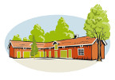
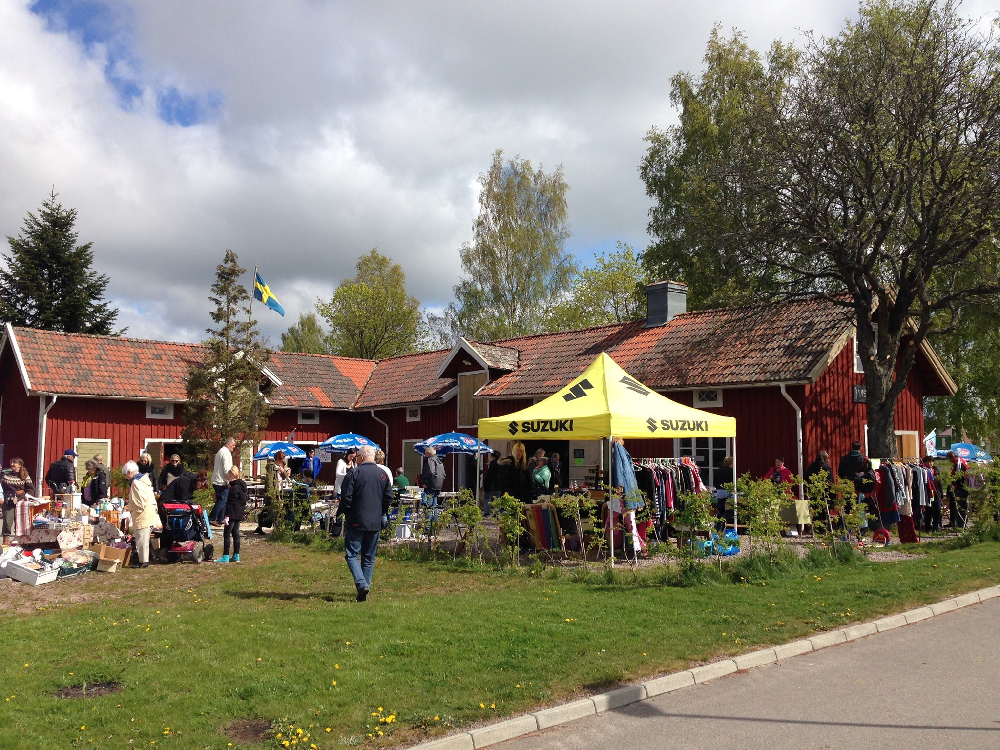
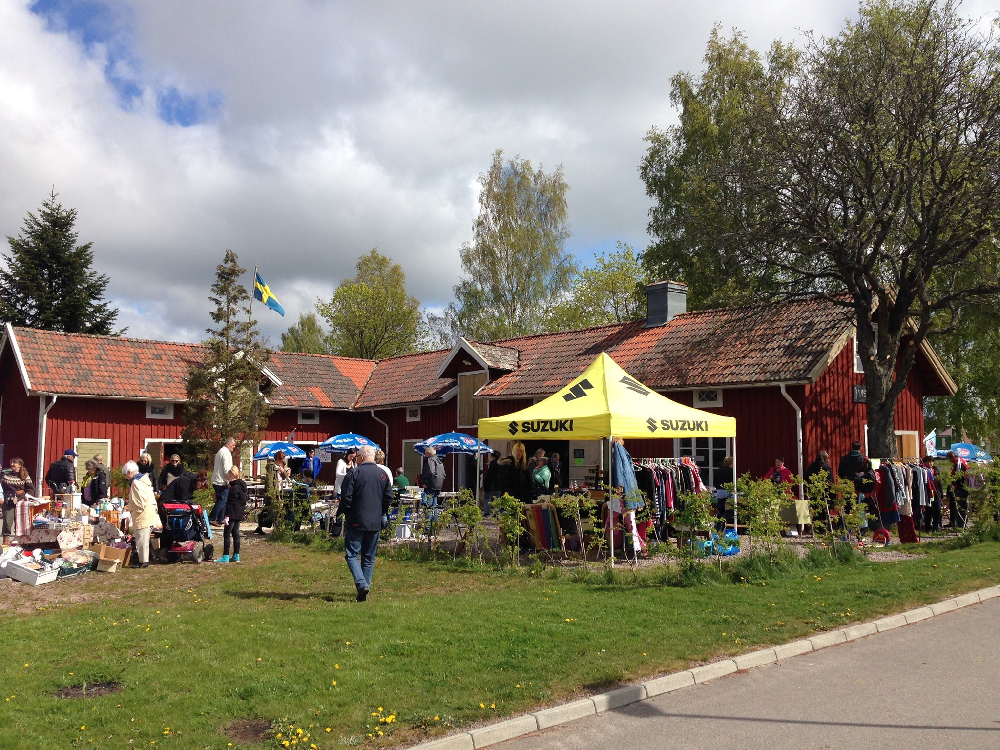

Sweden's longest Flea Market - Töreboda
This is the happening of the spring for everybody that loves flea markets! Are you one of those people who love to go to flea markets hoping for a bargain? Or are you looking for something special? Or is your home stuffed with little nicknacks?
On 7 may, for the 4th year in a row it is time again for Sweden’s longest flea market! On several locations along the «Göta Canal» the tables are set up and in Töreboda you will find them at café «Visthuset». We have opened our café and await you with really good coffee, tasty cakes, ice cream and freshly baked waffles! We also offer some light lunch options.
Take this advantage to kick-off the spring cleaning and bring things you would like to find a new owner for. Bring your own table or sell from the trunk of your car. It is free, you only need to register in advance. If you rather would like to rent a table, you can pre-book one for only SEK 100:-
If you are interested in participating contact us on Facebook or send an E-Mail to info@cafevisthuset.se. You can also give us a call at +46 (0)596 77 75 50 or +46 (0)70 922 71 92.
Welcome!

On 7 may, for the 4th year in a row it is time again for Sweden’s longest flea market! On several locations along the «Göta Canal» the tables are set up and in Töreboda you will find them at café «Visthuset». We have opened our café and await you with really good coffee, tasty cakes, ice cream and freshly baked waffles! We also offer some light lunch options.
Take this advantage to kick-off the spring cleaning and bring things you would like to find a new owner for. Bring your own table or sell from the trunk of your car. It is free, you only need to register in advance. If you rather would like to rent a table, you can pre-book one for only SEK 100:-
If you are interested in participating contact us on Facebook or send an E-Mail to info@cafevisthuset.se. You can also give us a call at +46 (0)596 77 75 50 or +46 (0)70 922 71 92.
Welcome!
